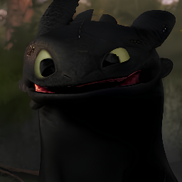
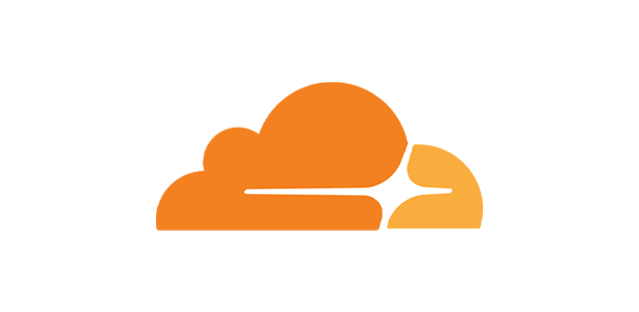
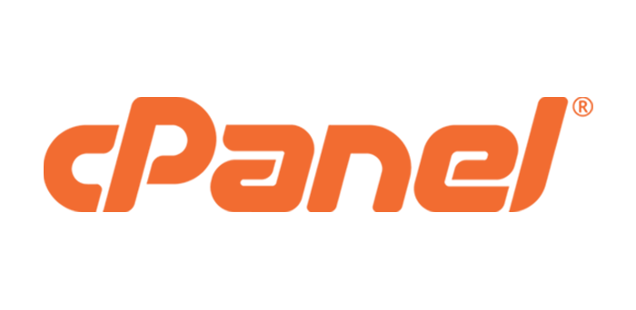
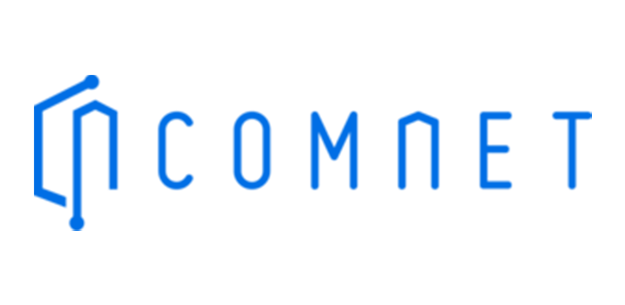
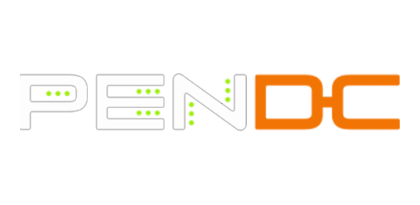
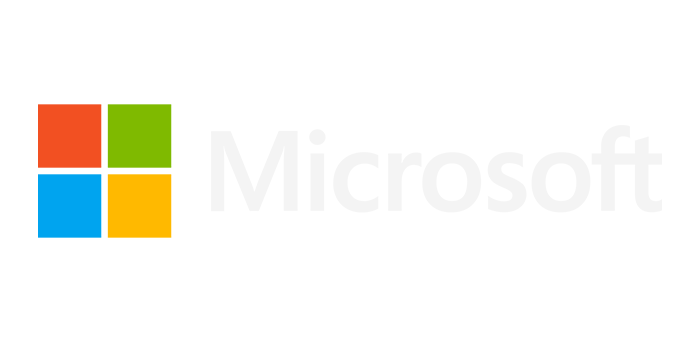

Performans
Lighthouse 95+ hedefiyle optimize edilmiş yükleme ve etkileşim süreleri.
Ölçeklenebilir arayüz mimarileri, erişilebilirlik odaklı tasarım sistemleri ve ölçülebilir performans. Fikirden yayına kadar uçtan uca üretim.

Yeni projelere açıkKurumsal ekiplerle çalışırken netlik, sürdürülebilirlik ve ölçülebilir sonuç önceliğimdir.
Beş yılı aşkın süredir kurumsal web uygulamaları, yönetim panelleri ve ürün siteleri geliştiriyorum. Her projeye ölçülebilir hedeflerle başlıyor, teknik borç bırakmayan bir mimari kuruyorum.
Tasarım sistemleri, bileşen kütüphaneleri ve performans bütçeleri ile ekiplerin uzun vadede hızlı kalmasını sağlıyorum. Erişilebilirlik ve SEO, sonradan eklenen değil baştan planlanan başlıklardır.
Lighthouse 95+ hedefiyle optimize edilmiş yükleme ve etkileşim süreleri.
Test edilebilir kod, sürüm kontrolü ve şeffaf teslim süreci.
Haftalık raporlama, net kapsam ve öngörülebilir zaman planı.
Uçtan uca ürün geliştirme sürecinin her aşamasında destek.
React, TypeScript ve modern CSS mimarileri ile ölçeklenebilir, bakımı kolay arayüzler.
Kullanıcı akışları, prototipleme ve tutarlı tasarım belirteçleriyle kurumsal arayüz dili.
Node.js servisleri, REST API tasarımı, veritabanı modelleme ve üçüncü parti entegrasyonlar.
Mobil öncelikli düzenler; telefondan geniş monitöre kadar kusursuz ve tutarlı deneyim.
Teknik SEO, yapılandırılmış veri ve ölçüm altyapısı ile görünürlüğü artıran kurulum.
CI/CD kurulumu, izleme, hata takibi ve düzenli bakım paketleriyle sürdürülebilir yayın.
Projelerde aktif olarak kullandığım diller ve teknolojiler.





Kurumsal ölçekte teslim edilen ürünlerden bir seçki.
Gerçek zamanlı kurumsal analitik paneli. Rol bazlı yetkilendirme, interaktif grafikler ve raporlama modülü.
Ekip içi süreçleri otomatikleştiren bot ve panel çözümü. Biletleme, görev takibi ve webhook entegrasyonları.
Kurumsal bileşen kütüphanesi. Erişilebilirlik standartları, tasarım belirteçleri ve Storybook dokümantasyonu.
Mobil öncelikli vitrin ve ödeme akışı. Gelişmiş filtreleme, sepet yönetimi ve ölçüm altyapısı.
Her aşamada net çıktı, net takvim ve net iletişim.
Hedefler, kapsam ve başarı ölçütlerinin belirlenmesi.
Akışlar, wireframe ve yüksek çözünürlüklü arayüz tasarımı.
Bileşen bazlı üretim, kod incelemesi ve test süreçleri.
Devreye alma, izleme kurulumu ve bakım planı.
Proje talepleriniz ve iş birlikleri için bana ulaşın.